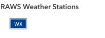

Fire Risk Map¶
The weather map provides a comprehensive, real-time view focused on current meteorological conditions across Vermont by integrating multiple data sources to support emergency operations.
 The Fire Risk map (named Weather - Fire Risk) is accessible here. It contains both grouped and ungrouped layers from internal and external sources.
The Fire Risk map (named Weather - Fire Risk) is accessible here. It contains both grouped and ungrouped layers from internal and external sources.
Purpose¶
This map provides detailed weather information for:
- Pre-event planning and preparation
- Storm tracking and monitoring
- Historical weather analysis
- Forecast verification
Data Layers¶
Layer Visibility
Some layers are only turned on (visbile by Default) seasonally or during SEOC activation.
| Group | Layer Name | Symbology | Source |
|---|---|---|---|
| NWS Weather Stations | Classified by Wind Speed |
NWS | |
| RAWS Weather Stations | ESRI basic point | NIFC | |
| Weather | NWS Radar | Classified by conus_bref_qcd |
NWS |
| Drought | Public Reports CMOR | ESRI basic point | CMOR |
| Drought | US Drought Monitor -Current | Classified by DM |
USDM |
| Fire | Current Wildfire Incidents | Classified by Wildfire Incidents |
NIFC |
| Fire | Current Wildfire Perimeters | Classified by Category |
NIFC |
| Fire | Vermont Fire Danger (Daily) | Classified by FIREDANGER |
VTFPR |
Reference Layers¶
The reference layers group is at the top of the table of contents to create a visual mask so that data within Vermont is highlighted, but the user can still data in surrounding states.
| Group | Layer Name | Type | Source |
|---|---|---|---|
| Boundaries | U.S. States and Territories | Polygon | NOAA |
| Boundaries | Vermont Counties | Polygon | VCGI |
| Boundaries | Vermont Towns | Polygon | VCGI |
| Boundaries | NA Political Divisions Polygons (mask) | Polygon | NAEA |
Layer Details¶
External Sources¶
The following layers are consumed from external, authoritative sources. These sources include Vermont agencies and departments and external partners like the NWS, USGS, FEMA, etc.
NWS Weather Stations
Source: NWS
Geometry Type: Point
Coordinate System: Web Mercator (EPSG:3857)
Update Method: Automatically updated by NWS
Pop-Up Attributes:
STATION_NAME: Unique weather station nameOBS_DATETIME: Date and time of reported observationWIND_DIRECT: Wind direction recorded by weather station (in degrees)WIND_SPEED: Wind speed recorded by weather station (in km/h)TEMP: Temperature recorded by the weather station (in fahrenheit)SKY_CONDTN: Description of sky conditionsVISIBILITY: A measure of the horizontal distance at which a person can clearly see and identify a prominent dark object against the horizon sky (during the day) or a moderately intense light source (at night)
Symbology:
Color-coded by WIND_SPEED
Icon: Geometric symbols imported from ESRI basic polygons

Filter:
Filtered by Country Name

NWS Weather Stations Updates
NWS weather data is "near real-time. The data displayed in the weather map is typically 5 to 20 minutes old and the standard update cycle is only once per hour unless something of importance happens.
RAWS Weather Stations
Source: NIFC
Geometry Type: Point
Coordinate System: WGS1984 (EPSG:4326)
Update Method: Automatically updated by NIFC
Pop-Up Attributes:
Agency: Agency that owns the stations (e.g., USFS, BLM, etc.).StationName: Unique weather station nameStatus: Weather station status (A = Active, I = Inactive, M = Maintenance)Ob Time: The time the sensor actually took the readingElevation: Ground elevation of the weather station (in feet)Air Temperature, Standard Placement: Standard ambient air temperature (in fahrenheit)Relative Humidity: The percentage of water vapor present in the air compared to the maximum amount the air can hold at the same temperature (in %)Rain Accumulation: Cumulative rainfall at the site, relative to a start date on October 1st (rainfall = 0) and accumulate until September 30th of the following yearWind Speed MPH: Wind speed recorded by weather station (in mph)Wind Direction: Wind direction recorded by weather station (in degrees)Solar Radiation: The intensity of sunlight hitting the ground (in W/m²)Fuel Moisture: The moisture content of dead vegetation (specifically "10-hour" fuels, which are sticks 1/4" to 1" in diameter) - (in %)Fuel Temperature: The temperature of the fuel stickMesoWest Detailed Weather Link: A website run by the University of Utah that aggregates all US weather dataNOAA Detailed Weather Link: The National Weather Service observations page
Symbology:
ESRI basic point
Icon: Geometric symbols imported from ESRI basic polygons

{kind=link}
Filtered by State

RAWS Weather Stations Updates
RAWS weather data is "near real-time. The stations are programmed to report a new observation every hour.
NWS Radar
Source: NWS
Geometry Type: n/a (Image Service)
Coordinate System: WGS1984 (EPSG:4326)
Update Method: Automatically updated by ESRI
This image service displays the NWS CONUS_BREF_QCD radar product. CONUS = Continental United States, BREF = Base Reflectivity, which is the "raw" echo intensity from the lowest tilt of the radar (0.5°), which shows what is happening closest to the ground, and QCD = Quality Controlled Data. This means the NWS has run an algorithm to remove "non-meteorological" noise, such as ground clutter (buildings/mountains) or sun spikes, to clean up the image. Units are dBZ (Decibels of Z), which is a logarithmic scale representing the energy reflected back to the radar dish.
Symbology:
ESRI Image Service
Color Ramp: Pre-defined symbology by NWS

dBZ Range Interpretation:
This table outlines the standard relationship between radar reflectivity values (measured in dBZ) and precipitation intensity. Note that the same dBZ value indicates different conditions depending on whether the precipitation is liquid (rain) or frozen (snow/hail). While high values (>50 dBZ) typically indicate heavy rain in summer, even moderate values (30–40 dBZ) can signify dangerous whiteout conditions during winter storms.
| dBZ Range | Intensity Category | Summer Interpretation | Winter Interpretation |
|---|---|---|---|
| < 10 | Non Precipitation | Clouds, fog, smoke, or dust | Very light snow flurries or ice crystals |
| 10 - 20 | Very Light | Light mist or drizzle | Winter Light snow (trace accumulation) |
| 20 - 30 | Light | Light steady rain | Moderate snow accumulation |
| 30 - 40 | Moderate | Moderate rain | Heavy snow (whiteout conditions) |
| 40 - 50 | Heavy | Heavy rain | Extremely heavy snow or sleet mix |
| 50 - 60 | Intense | Very heavy rain / thunderstorms | Hail is likely forming |
| 60 - 70 | Extreme | Flash flood producing rain | Severe hail (golf ball+ size) |
| > 70 | Catastrophic | Extreme storm core | Giant hail (baseball+ size or debris) |
Current Wildfire Incidents
Source: NIFC
Geometry Type: Polygon
Coordinate System: WGS1984 (EPSG:4326)
Update Method: Manually updated by the NIFC
Pop-Up Attributes: (based on Wildfire Data Dictionary - IRWIN SCHEMA)
INCIDENTNAME: Fire incident nameUNIQUEFIREIDENTIFIER: Unique identifier assigned to each wildland fireCALCULATEDACRES: the number of acres within the current perimeter of a specific, individual incident, including unburned and unburnable islandsDAILYACRES: A measure of daily acres reported for a fire.CAUSE: Broad classification of the reason the fire occurred identified as human, natural or unknownCONTROLDATETIME: The date and time a wildfire was declared under controlFINALACRES: Reported final acreage of incidentFIREDISCOVERYDATETIME: The date and time a fire was reported as discovered or confirmed to exist. May also be the start date for reporting purposesCONTAINMENTDATETIME: The date and time a wildfire was declared containedFIREOUTDATETIME: The date and time when a fire is declared outMODIFIEDONDATETIME: Date/time that the IRWIN Incident record was last modifiedPERCENTCONTAINED: Indicates the percent of incident area that is no longer active.FATALITIES: The total number of deaths of personnel assigned to an incidentINJURIES: The total number of reportable occupational injuries and illnesses that occurred in conjunction with an incidentRESIDENCESDESTROYED: The total number of residences destroyed, or damaged to an extent requiring rebuilding, as a result of a fireOTHERSTRUCTURESDESTROYED: The total number of structures, other than residences, destroyed as a result of a fireTOTALINCIDENTPERSONNEL: The total number of personnel assigned. Includes overhead, crewmembers, helicopter crewmember, engine crewmembers, camp crew people, etc.
Symbology:
Fire symbol imported from ESRI Public Safety Stylesheet
Icon: Pre-defined symbology by NIFC

Current Wildfire Incidents Updates
This layer may not reflect the most current wildfire locations (there is often a delay in updating).
Current Wildfire Perimeters
Source: NIFC
Geometry Type: Polygon
Coordinate System: WGS1984 (EPSG:4326)
Update Method: Manually updated by the NIFC
Pop-Up Attributes: (based on Wildfire Data Dictionary - IRWIN SCHEMA)
INCIDENTNAME: The incident name as stored in the polygon source recordCALCULATEDACRES: the number of acres within the current perimeter of a specific, individual incident, including unburned and unburnable islandsCREATEDATE: System generated date for the date time the source polygon record was created (stored in UTC)UNITID: NWCG Unit Identifier to identify the unit with jurisdiction for the land where the point of origin of a fire falls
Symbology:
ESRI basic polygon
Icon: Pre-defined symbology by NIFC

Current Wildfire Perimeters Updates
This layer may not reflect the most current wildfire perimeters (there is often a delay in updating).
Vermont Fire Danger (Daily)
Source: VTFPR
Geometry Type: Polygon
Coordinate System: Vermont State Plane (EPSG:32145)
Update Method: Updated daily by Vermont FPR
Pop-Up Attributes:
FIREDANGER: LOW, MODERATE, HIGH, VERY HIGH, EXTREMEFDRA: Fire danger rating area identifier (e.g., FDRA2, FDRA3, etc.)NOTES: Relevant notes shared by VT FPR staff
Symbology:
ESRI basic polygon
Icon: Pre-defined symbology by VTFPR

Basemap¶
Default: Topographic for visualizing data relative to Vermont's variable topography
Performance Notes¶
For optimal performance with this map:
- Recommended to keep 4-5 layers active simultaneously
- Turn off reference layers when not needed
- Use time filters to limit historical data queries